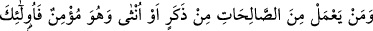
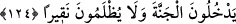

Daha sonra Allah Teâlâ geçen cümlenin hükmünü tekid ederek şöyle buyurdu: “Kim
bir kötülük yaparsa” çirkin amel yapan, er geç “onun cezâsını görür.”
Rivâyet edildiğine göre bu âyet nazil olduğunda Hz. Ebû Bekir (r.a.) Rasûlullah
(s.a.v)’e: “Bu âyete göre kim kurtulabilir ki?” dedi. Bunun üzerine, Rasûlullah (s.a.v):
“Sen hiç hüzünlenmez, hastalanmaz veyâ baş ağrısı çekmez misin?” diye sordu. O da:
“Evet yâ Rasûlallah.” diye cevap verdi. Rasûlullah (s.a.v) ona: “İşte bunlar senin için
birer cezâdır.” diye karşılık verdi.[163]
Ebû Hureyre (r.a.) da şöyle demiştir: “Bu âyet indiği zaman biz ağlayıp hüzünlendik
ve “Yâ Rasûlallah, bu âyet geriye hiç bir şey bırakmamış” dedik. Bunun üzerine şöyle
cevap verdi: “Dikkat edin! Nefsim kudret elinde olan Allah’a yemin ederim ki bu âyet
sizin için indirildi. Ama kolaylaştırın, orta yolu tutun ve doğruluktan ayrılmayın.
İfrata kaçmayın ki ibâdette nefsinizi yorup da bıkkınlığa yol açarak ameli terk
etmeyesiniz.”[164] “el-Mekâsıdü’l-Hasene”de bu şekilde rivâyet edilmiştir.
“ve kendisi için Allah’tan başka dost, yardımcı da bulamaz.” Allah’ın dostluğundan
ve yardımından mahrumsa kendisinden azâbı uzaklaştırmak için dost ve yardımcı
bulamaz.
124- Erkek olsun, kadın olsun, her kim de mü’min olarak sâlih (iyi) işler yaparsa,
işte onlar cennete girerler ve zerre kadar haksızlığa uğratılmazlar.
“Erkek olsun, kadın olsun, her kim de mü’min olarak” yapılan güzel amellerin
mûteber olması için îman şarttır. Çünkü îmanı olmayanın ameli mûteber değildir. “İyi
işler yaparsa” Yâni iyi işlerin bir kısmını, birazını yaparsa, demektir. Çünkü her insan
bütün iyilikleri yapma imkânına sahip olmadığı gibi hepsini yapmakla sorumlu da
değildir. Ancak sorumlu olduğu ve gücü yettiği kadarını yapar. Nice mükellef insanlar
vardır ki, kendilerine hac, cihad ve zekât farz değildir. Hattâ bâzı durumlarda namaz
bile sâkıt olur. “İşte onlar” yâni sâlih amel işleyen mü’minler “cennete girerler ve
zerre kadar haksızlığa uğratılmazlar.” Hakettikleri mükâfât eksiksiz olarak kendilerine
verilir.
Âyetteki “nakîr” kelimesi “nukre”den gelmiştir. O da hurma çekirdeğinin üzerindeki
çukurcuktur ki hurma oradan filizlenir. Bu kelime, azlık ve küçüklük ifâde etmek için
kullanılır.
İtâat edip sâlih ameller işleyen mü’minin mükâfâtı eksilmeyeceğine göre âsînin de
cezâsı artmayacaktır. Çünkü amellerin karşılığını veren merhamet edenlerin en
merhametlisi olan Allah’tır. Bir hadis-i şerifte Peygamberimiz (s.a.v.) şöyle
buyurmuştur: “Allah Teâlâ bir tâate on hasene, bir günaha ise bir cezâ va’detmiştir.